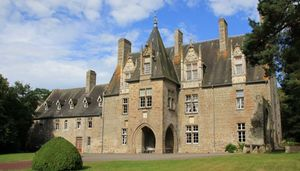
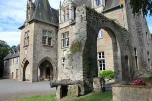
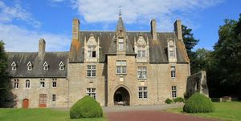
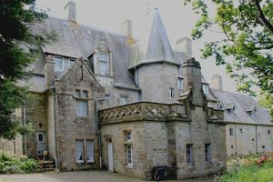
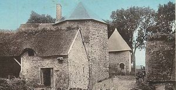

Recensement Jean-Claude Truffet
| Département | 50 — Manche |
| Canton | Avranches |
| Commune | Dragey-Ronthon |
| Type d'édifice | Château |
| Période d'origine | XV-XVIII |
| Coordonnées GPS | 48° 41' 47" Nord, 1° 29' 36" Ouest Potrels GPS: 48° 42' 42,58" Nord, 1° 30' 19,07" Ouest |





Deux châteux dans cet artcle Brion et Potrels. POTRELS, la construction du Manoir de Potrels date du XVe avec son porche à 2 tours circulaires, son pigeonnier octogonal, ses poutres peintes et ses boiseries de style Louis XIII. De la ferme fortifiée du XVe siècle, il reste l'entrée de la cour gardée par deux tourelles percées de meurtrières et un colombier orthogonal. Le Manoir de Potrel possède une salle d'honneur, au premier étage, ornée d'un ensemble de boiseries et poutres peintes du 3e quart du XVIIe siècle. Au XVIIe siècle, le manoir de Potrels est acheté lors de son exil en France par George de Carteret (1609-1679), bailli de Jersey, vice-amiral de la Royal Navy et fondateur de la Caroline du Nord, l'un des 8 lords, propriétaires de Caroline et du New Jersey. Le 27/11/1933, les cheminées, boiseries et plafond de la salle d'honneur du manoir sont inscrits au titre des monuments historiques. Le manoir avec l'ensemble de ses décors intérieurs (escalier, portes, cheminées, charpente, façades et toitures des deux tourelles d'entrée et du bâtiment octogonal contigü) est inscrit par arrêté du 31 octobre 1990. Il existe un autre manoir à découvrir sur la commune : le manoir de Brion du XVIe, remanié au XXe siècle.
BRION, le château est un ancien prieuré bénédictin dépendant de l'Abbaye du Mont-Saint-Michel fondé en 1066 par Raoul de Beaumont, abbé du Mont-Saint-Michel. De nombreux grands personnages royaux y ont séjourné, notamment le Roi Charles VI en 1393, Louis XI en 1462 et François 1er en 1532. Le château est une charmante construction dans le style gothique flamboyant. construit vers 1510 pour servir de logis abbatial à Guillaume de Lamps. Au milieu du XXe siècle la propriété appartenait au comte Jean de Rolland. Sept chambres d'hôtes. Il date du XIe au XIVe siècle. C'est un ancien prieuré bénédictin de l'abbaye du Mont-Saint-Michel. Il est situé dans l'Avranchin (Manche), à mi-chemin des bourgs de Genêts et de Dragey (commune de Dragey-Ronthon, sur le territoire de laquelle il est bâti) et a été fondé en 1137 par saint Bernard de Clairvaux. Plusieurs rois et membres de la cour de justice royale sont restés au manoir de Brion lors de leur pèlerinage au Mont-Saint-Michel, dont Charles VI en 1393, Louis XI en 1462 et François Ier en 1532. L'explorateur Jacques Cartier a été aussi présenté à François Ier au manoir de Brion avant son voyage au Canada en 1534, d'où le nom d'une des îles de la Madeleine appelée l'île Brion. L'auteur britannique Vincent Cronin y résida à la fin de sa vie. Depuis, le Manoir historique de Brion est composé de 4 chambres d'hôtes datant du XIe siècle.
Brion; comte Jean de Rolland Potrels; George de Carteret
"
Deux châteux dans cet artcle Brion grav 1-2-3-4 et Potrels grav-5. Brion GPS : 48° 41' 47" Nord, 1° 29' 36" Ouest Potrels GPS: 48° 42' 42,58" Nord, 1° 30' 19,07" Ouest